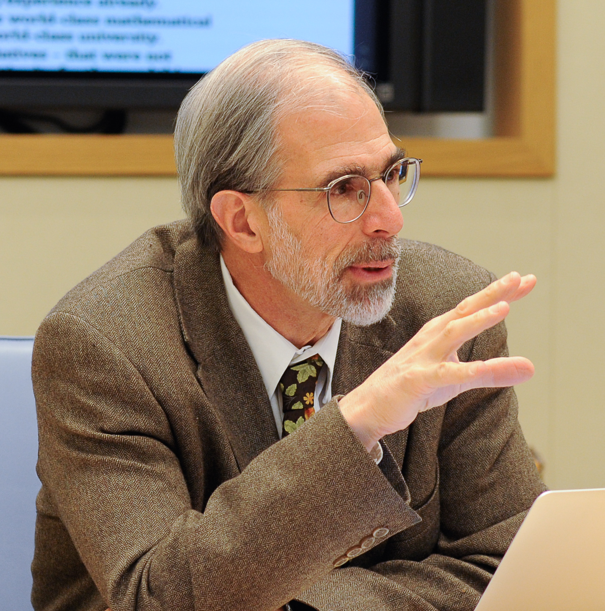

Seminar on Commutative Algebra and Algebraic Geometry

Academic Background
After getting my PhD at the University of Chicago in 1970,
I taught at Brandeis University for twenty-seven years,
with sabbaticals in Paris, Bonn, and Berkeley. In 1997 I
became Director of the Mathematical Sciences Research Institute (MSRI) in
Berkeley; at the same time I joined the
faculty of UC Berkeley as Professor of Mathematics.
As Director of MSRI from 1997 to 2007, I had the satisfaction
of supporting a huge amount of mathematics and related activity
at the Institute, and in helping it develop two things I thought
it needed badly: a physical facility worthy of such a world-class
institution, and (the beginning of) an endowment.
From 2003 to 2005 I was also President of the American Mathematical
Society, an organization I came to admire a great deal. I was elected
Fellow of the American Academy of Arts and Sciences in 2006.
Robert Bryant succeeded me as Director of MSRI in 2007, and from then until
the fall of 2012 I divided my time between teaching at Berkeley and
working as Director of Mathematics and Physical Sciences at the Simons Foundation in New York,
where I initiated the public programs in Mathematics, Theoretical Physics, and
Theoretical Computer Science.
I returned to MSRI in the year 2012-13 as an organizer of the year-long program on
Commutative Algebra, and became Director of MSRI again in August, 2013, in which role
I served until August, 2022. I have now gone "back" to teaching as Professor
in the department of mathematics at UC Berkeley.
From My first terms as Director:
From My third term as Director, 2013-2017:
MSRI's biggest outreach project to date was the National Math Festival, April 16--18, 2015, a joint project with the Institute for Advanced Study. Here is an
Op-Ed piece
that
I wrote in
the Notices of the AMS to spread the word, and here are articles
from The New Yorker
and
from the MAA Focus
that appeared afterwards.
-
Current Activities Outside MSRI
Organizational
I remain connected to the Simons Foundation as member, since 2012, of its Board of Directors; and I have been
on the Board of Directors of Math for America since its inception in 2004.
I helped found the
Journal of Algebra and
Number Theory in 2006, and the
Journal of Software for Algebra and
Geometry in 2009, and I'm Chair of the Editorial Board of the former.
I'm also an editor of Springer-Verlag's book series
Algorithms and
Computation in Mathematics.
While President of the AMS I helped plan the
Math Research Communities Program,
and chaired its advisory board for several years.
Current Events Bulletin at the Winter AMS Meeting
Since 2004 I've been organizing a session at each of the Winter
AMS meetings on Current Events in Mathematics. The format is simple:
four accessible 50-minute lectures on some of the most interesting
pure and applied mathematics of the last few years, presented by people
who are speaking on the work of others. The inspiration is of course the
famous Bourbaki Seminar, but the aim is to be broader and represent a
wider range of mathematics, particularly on the applied side.
A
booklet with writeups of the talks is available at the meeting
and online. Almost all of them become articles in the
Bulletin of
the American Mathematical Society afterwards.
Research Interests
My first paper was about permutation groups, and my thesis and
subsequent few papers on non-commutative ring theory (my thesis
advisors were Saunders MacLane and, unofficially, the English
ring-theorist J.C. Robson.) I turned to commutative algebra, and
subsequently to singularity theory, knot theory, and algebraic
geometry. My papers also
include one on a statistical application of algebraic geometry and one
on juggling.
Recently I've worked on the homological aspects of commutative
algebra and algebraic geometry; and on computational tools for these fields.
Ever since the early 70s I've used computers to produce
examples in algebraic geometry and commutative algebra, and I've
developed algorithms to extend the power of computation
in this area. In 2009 I joined Mike Stillman
and Dan Grayson as Co-PI on the grant to (further) develop the
Macaulay2 system for symbolic computation.
Some of the papers I'm proudest of were partly inspired by computations with
that system.
Recreation
My interests outside mathematics include hiking, juggling, and, above
all, music. Originally a flutist, I now spend most of my musical time
singing art-songs (Schubert, Schumann, Brahms, Debussy, ...) I broke
down and bought a digital camera in November 2001, and you can find
some of the results (alas, not up-to-date!) on my photo page.
CV, Papers, Students
Saunders Mac Lane: In Memoriam
Saunders Mac Lane died on April 14, 2005. He was my thesis advisor---Irving
Kaplansky was his first student, I was nearly his last; perhaps John
Thompson is the most illustrious. I wrote a
preface that contains some of my favorite stories about him
for his
Autobiogrphy
, which
was originally published by
AK Peters.
He was a great figure,
and very important for me personally.
Some Ongoing Work
Here
are some of my current mathematical projects:
Joe Harris and I have finally finished a book that could be a
"second course" on algebraic geometry, taking intersection theory as a path through
which many important aspects of the subject can be introduced:
3264 and All That; Intersection Theory in Algebraic Geometry.
It is being published by Cambridge University Press, and should appear in the spring of 2016.
-
With Daniel Erman and Frank Schreyer I'm working on understanding the analogues of Tate resolutions for Toric varieties. The case of projective space is explained in a paper of mine with Floystad and Schreyer some years ago.
In November 2014, Erman and Schreyer and I posted a preprint solving the problem for the "easiest difficult" case -- Products of projective spaces.
-
Irena Peeva succeeded in fulfilling a dream of many years: we found a good analogue
for complete intersections of the description of minimal free resolutions over hypersurfaces by
matrix factorizations. There are many questions that are opened up by this work, and
Frank Schreyer and Jesse Burke have joined us on various aspects of the
project that are still developing.
-
With Bernd Ulrich and Marc Chardin I've done some work on residual intersections. The latest
preprint is Duality and Socle Generators for Residual Intersections. This is a greatly expanded and improved version of a preprint we posted at the end of the
MSRI Commutative Algebra year, 2012-13. The whole project was inspired by work of
Duco van Straten and Huneke-Ulrich, who discoverd two pieces in what turns out to be a whole
series of dualities, and by conjectures of van Straten and Warmt that the socle of the canonical
module of a residual intersection is, under good circumstances, defined by a Jacobian determinant.
-
With Jeremy Gray I'm working on a biographical paper about the life
and work of F.S. Macaulay. Though his work contains aspects that
look quite various, I think there's a very strong underlying thread
that can be traced from the early work on plane curves right
through his invention (in the graded case) of the notion of what we now call
a Gorentstein ring.
I am grateful to the National Scienced Foundation for partial support
in my work on these projects!
Commutative Algebra Book
My book, "Commutative
Algebra with a View Toward Algebraic Geometry", published in 1995 by
Springer-Verlag,
won the AMS's
Leroy P. Steele Prize for Exposition in 2010.
Here are some correction lists:
-
Inserted in the second (1996) printing ( TeX source,
pdf)
-
Inserted in the third (1999) printing (TeX source,
pdf). Note that the page numbers changed a little between the
first and second printings.
The pages above are now rather out-of-date; this is a project
I'll get to sooner or later. But if you are aware of further corrections
or have any comments, I hope you'll send
them to me.
Addresses
David Eisenbud
Director, MSRI
17 Gauss Way
Berkeley, CA 94720
email: <de@msri.org>
Links
MSRI
UC Berkeley Mathematics
A film about χiralbacks (= chiral rattlebacks) by Tadashi Tokieda (the password is msri)
Two spinning turtles 5 2 14 from Zala Films on Vimeo.
Created: August 2, 1995. Last updated: November 30, 2014.